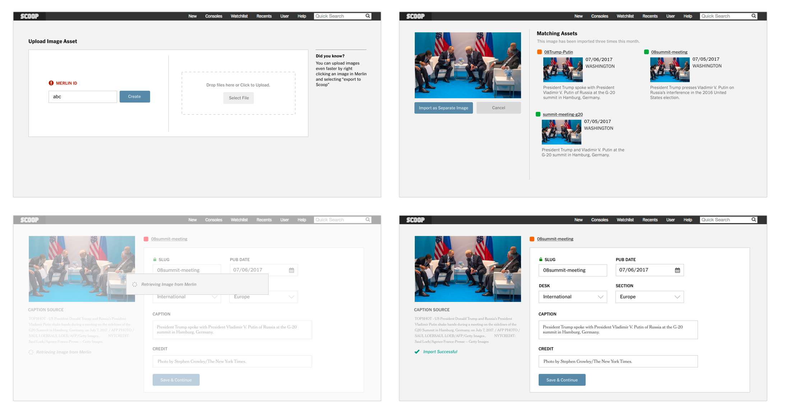

The Story Dashboard leaves behind a disconnected and labor-intensive process for a more reliable and transparent one that lets editors focus on the journalism. Shown below is Detail View layer where editors can navigate between results for coordination information without opening up the article for editing.
